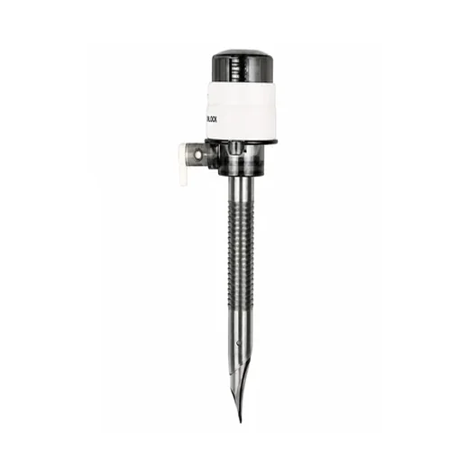

All products

Single Use Trocars
Bladeless dilating tip system for laparoscopic access. Available in 5mm, 10mm, 12mm and 15mm. Universal valve accommodates instruments without a converter.
✓ Single Use · Sterile
CE Certified
ISO 13485
Overview
Bladeless access for minimally invasive surgery.
The AVIORA trocar uses a patented olecranon dilating tip that separates tissue rather than cutting it. This eliminates the sharp-entry injury risk associated with bladed trocars and removes the need for fascial suture closure at ports 10mm and below in most patients. The system is fully single-use — no reprocessing, no cross-contamination risk.
Intended for diagnostic and operative laparoscopy, gynaecological, urological and gastrointestinal MIS procedures.
Intended Use
Diagnostic and operative laparoscopy
Gynaecological surgery (hysterectomy, myomectomy)
Colorectal laparoscopic procedures
Urological procedures (nephrectomy, prostatectomy)
Bariatric surgery (extra-long variant available)
Key Features
Design & engineering details.
Bladeless olecranon tip
Dilates rather than cuts the abdominal wall. No fascial suture required at ≤10mm ports in most patients.
Universal valve system
Three-layer gas-proof seal accommodates 5–12mm instruments without a converter sleeve.
Thread retention
Threaded cannula body resists pull-out forces during instrument exchanges without suture fixation.
Single-use sterility
EO sterilised. Supplied individually packaged. No reprocessing required — consistent performance every case.
Specifications
Available configurations.
For full technical documentation including IFU, CE technical file and sterilisation records, contact us.